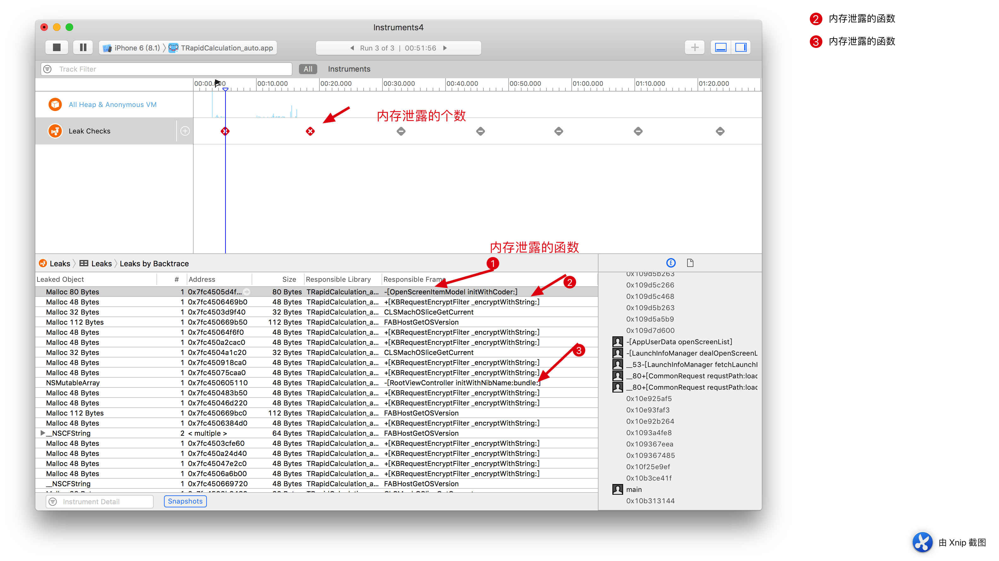

本文不是对内存管理的应用介绍，而是对内存里一些比较难以理解的概念做重新梳理。
本文将会解决的如下疑问
1. 内存管理研究的对象(这是几个基本的问题)
2. 自动释放在ARC里理解(自动释放在ARC里似乎被大家遗忘或是被误解)
3. 自动释放池的原理实现
4. ARC里有些系统的API为什么不需要做__weak避免循环引用？
5. 为什么NSTimer容易造成内存泄漏，怎么解决？
6. 如何检查内存泄漏的实践
一：内存管理研究的对象（基本问题）
简单回忆下内存管理内容
对内存的管理采用引用计数。释放计数release,autorelese.在知道明确的释放位置时，使用release,在是自己创建当要传递给别人时，不知道明确的释放位置时加入autoreleasePool里。让系统帮着在合适的时机释放（其实这个合适的时机时在一个运行循环的结束）。当一个对象的引用计数0时，对象释放。而MARC与ARC的区别，是ARC编译器为我们做了在合适的时机加入+1与-1，当然这个工作是用了更底层的api。
比较重要的几个概念
野指针
指指针变量没有进行初始化或者指向的空间已经释放。（没进行初始化，有可能指向的内存地址就是非法的，指向的空间已经释放，这个指针也可能被其他占用）。这种情况在MRC时代很常见。在ARC很少见。因为ARC里weak会自动给释放的对象的引用设置为nil。OC里对nil发消息是没有任何反应的。比如 利用unsafe_unretained修饰的对象被释放了（这个不会主动置null）。内存泄露
- 在栈区对象引用置为nil。在MRC里是会内存泄露的,因为堆区的对象没有收到release。当在ARC里是不会有内存泄露的,ARC做了优化。ARC里只要没有强引用了就会释放（这块因为在看一些文章时，有的没有说明具体环境，给人造成一些误解。经过实践）
- 循环引用
- 使用C的API
CGColorSpaceRef colorSpace = CGColorSpaceCreateDeviceRGB();
CGColorRef colorRef = CGColorCreate(colorSpace, (CGFloat[]){0,0,0,0.8});
//这里就有内存泄露。计即使在arc下，也需要释放
//CGColorRelease(colorRef);
僵尸对象
堆中已经释放的对象retainCount = 0;空指针
指针为nil.不指向任何一个堆区对象。
二：ARC里的Autorelease
ARC修饰符回忆
1. ARC,__weak在对象被释放时，指向它的弱引用会自动被置为nil;
2. ARC里的修饰符,__strong，__weak，__autoreleasing
如果是从MRC转过来，这样思考，__stong就是retain,__autoreleasign就是autorelease。只是编译器给我们添加了。而__weak，只是引用，不做任何操作。
当在实际的开发中，autoreleasing好像不存在似的_autoreleasing其实在ARC里也是存在的。与MRC里的autorelease作用相同如下做出解释
在ARC下，编译器会检查方法名是否以alloc/new/copy/mutableCopy开头，如果不是，则自动将返回的对象注册到autorelease pool中。
@interface RJBObject : NSObject
+ (NSString *)newHelloWorldString;
+ (NSString *)helloWorldString;
@end
@implementation RJBObject
+ (NSString *)newHelloWorldString {
return [[NSString alloc] initWithCString:"HelloWorld" encoding:NSUTF8StringEncoding];
}
+ (NSString *)helloWorldString {
return [[NSString alloc] initWithCString:"HelloWorld" encoding:NSUTF8StringEncoding];
}
@end
int main(int argc, const char * argv[]) {
@autoreleasepool {
__weak NSString *helloWorldString = [RJBObject helloWorldString];
__weak NSString *newHelloWorldString = [RJBObject newHelloWorldString];
//assigning retained object to weak variable;
//object will be released after assignment
NSLog(@"%@", helloWorldString);//输出HelloWorld
NSLog(@"%@", newHelloWorldString);//输出null
}
return 0;
}
从上面可以看出。ARC给非创建的函数的返回值添加了自动释放池。
在一些特殊的情况下，程序员也可以手动给某些方法加上其他标记，来覆盖被编译器隐式加上的标记。
比如
函数之间如果想要传递一个对象，不仅可以通过返回值，也可以通过将一个对象
三：自动释放池
自动释放池就是一个数据结构，里面存有要被自动释放的对象的引用（实际就是搞一个存储地方即池子，标记需要在池子释放时同时释放的对象而已，那么释放时机就是池子的释放时机了），在自动释放池要释放的时候，会向这些对象发送release。
那么自动释放池释放时机？
自动释放池“自动释放”时，是在一个运行循环结束时。在与runloop联系时，是在runloop收到afterWaiting时（线程苏醒），将需要放入释放池的对象，在这个运行循环里放到这池子里面。在runloop收到beforeWaiting时(线程即将进入睡眠)，将池子倒掉。
当然可以“手动释放”池子。自己创建的释放池，可以在出去(运行到{}后)池子时就释放掉。手动创建的自动释放池灵活应用可以避免内存泄露，避免不断循环并创建对象导致的内存峰值，避免可能将栈区搞溢出。
特别说明
主线程，GCD创建的线程都是会主动创建一个自动释放池的。而采用NSThread是不会主动创建一个自动释放池的。所以要特别注意，采取这种方式创建的线程要注意内存泄露。具体的实现源码AutoreleasePoolPage实现的一个双向链表实现的栈。具体的源码分析。我们将在专门的一章进行说明。
四：为什么系统的某些blockAPI不会循环引用?
如下：一
以前以为不会循环引用可能是系统做了哪些工作。哎，当初真是笨啊，糊里糊涂的死记，并没有理解其本质。还是回到循环引用的本质就能理解。不说了。
[UIViewanimateWithDuration:durationanimations:^{
[self.superviewlayoutIfNeeded];
}];
如下：二
dispatch_async(dispatch_get_main_queue(), ^{
[self.navigationController pushViewController:self.blockvc animated:YES];
});
上面两例都不会造成循环引用，根本原因就时block捕获self,当self幷不强引用block;
如下：三
NStimer的两种版本
[NSTimer bk_scheduledTimerWithTimeInterval:10 block:^(NSTimer *timer) {
[Weak(self) fetchChatRoomInfo];
} repeats:YES];
- (void)viewDidLoad {
self.timer = [NSTimer timerWithTimeInterval:1 target:self selector:@selector(timeTick) userInfo:nil repeats:YES];
}
- (void)timeTick {
}
block版本的通过设置弱引用可以防止循环引用
target版本因为设置target时将self强引用了（即计时器会保留它的target对象）。在timer处于有效期间，会一直对self持有强引用。而self又对timer有强引用。这就导致了，大家常说的NSTimer导致的内存泄漏的原因。
那么如何去解决这个问题？
首先想到的是打破环
手动调用timer的invalidate,但在程序中，我们很难保证一定就会调用到这个使定时期无效的代码。有人会想，我将无效的代码放在dealloc里不就可以保证了吗。哈哈，当什么时候调用dealloc呢，是在释放的时候。因为循环引用了，dealloc永远不会调用。
最优的思路
将NSTimer进行block化。然后用blcock的API,通过设置weak避免循环引用。就能解决了。
以下是block化的代码(实际是将NSTimer对target的强引用变成对类对象的强引用，而类对象本来就不会释放。就无所谓了。这里就给我们提供了一个绝妙的思路，在设计API时采取这种方式是不是更好呢！)
@interface NSTimer (Block)
+ (NSTimer *)rjb_scheduledTimerWithTimeInterval:(NSTimeInterval)interval
block:(void(^)(void))block
repeats:(BOOL)repeats;
@end
@implementation NSTimer (Block)
+ (NSTimer *)rjb_scheduledTimerWithTimeInterval:(NSTimeInterval)interval
block:(void(^)())block
repeats:(BOOL)repeats {
return [NSTimer scheduledTimerWithTimeInterval:interval target:self selector:@selector(rjb_blockinvoke:) userInfo:[block copy] repeats:YES];
}
+ (void)rjb_blockinvoke:(NSTimer *)timer {
void (^block)() = timer.userInfo;
if(block){
block();
}
}
@end
四：内存泄露检测的实践
下面我以我在我自己的项目中的真实记录
静态分析analyze
Leak checks
在时间线里有红色x的就是有内存泄露。下面代码是哪个泄露的函数实现

哈哈，以我们自己的项目里，可以看出，用c的API导致的内存泄露很多，项目里的人员对于c里的内存管理不是很理解。
calloc申请的内存明显没有释放，添加free(map_chars)即可
+ (NSString *)_encryptWithString:(NSString *)source {
NSString *materialString = [source stringByAppendingString:(NSString *)k_material];
NSString *encryptString = [self md5WithString:materialString];
NSUInteger len = encryptString.length;
char *map_chars = (char *)calloc((len+1), sizeof(char));
md5Map([encryptString UTF8String], map_chars, (int)len);
NSString *mapString = [NSString stringWithCString:map_chars encoding:NSUTF8StringEncoding];
return mapString;
}
vars因为是copyIvarList产生的.是非object-c对象，所以要手动释放。添加free(vars)
- (nullable instancetype)initWithCoder:(NSCoder *)aDecoder{
if (self = [super init]) {
unsigned int outCount = 0;
Ivar *vars = class_copyIvarList([self class], &outCount);
for (int i = 0; i < outCount; i ++) {
Ivar var = vars[i];
const char *name = ivar_getName(var);
NSString *key = [NSString stringWithUTF8String:name];
id value = [aDecoder decodeObjectForKey:key];
[self setValue:value forKey:key];
}
}
return self;
}
五：常见的内存泄露场景
- NSTimer初始化时指定self为target。即self引用timer,timer引用self。
- block的循环引用
- 调用c的API忘记调用release
- 在通知中心里，在对象销毁前不将该对象从通知中心移除，当发送通知时，就会造成奔溃(野指针)。